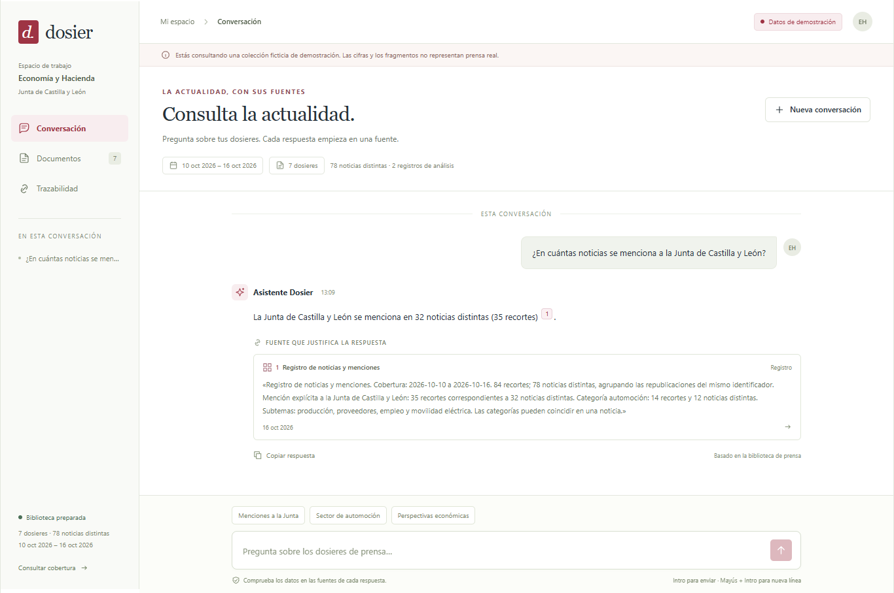
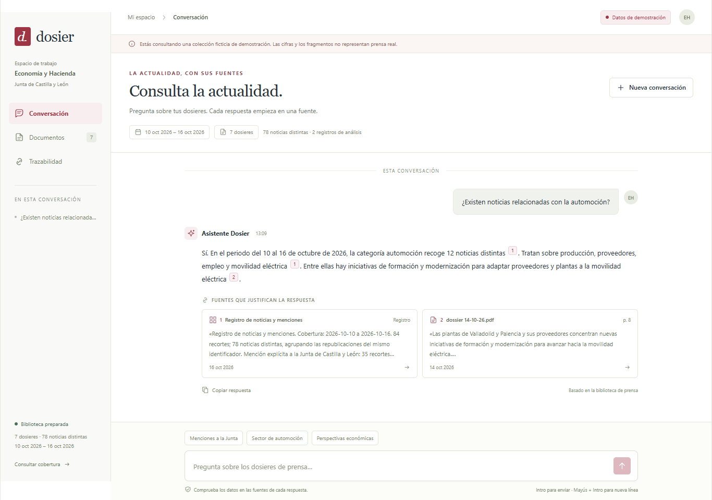
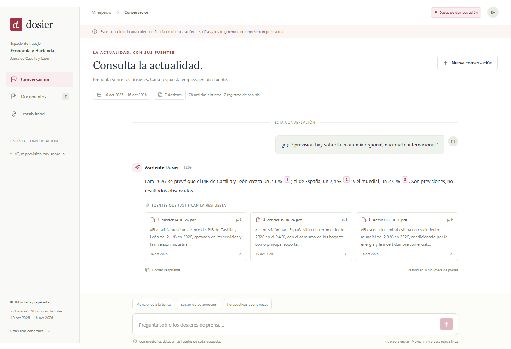
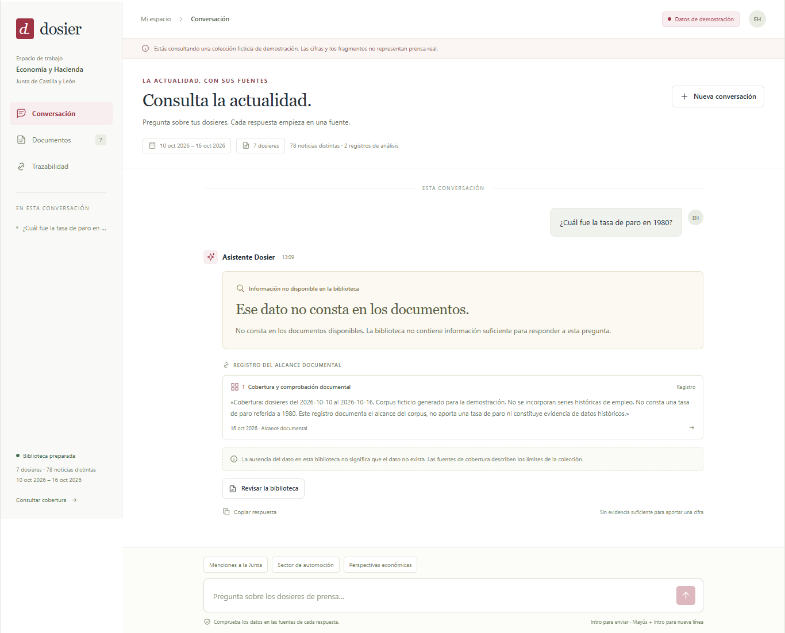
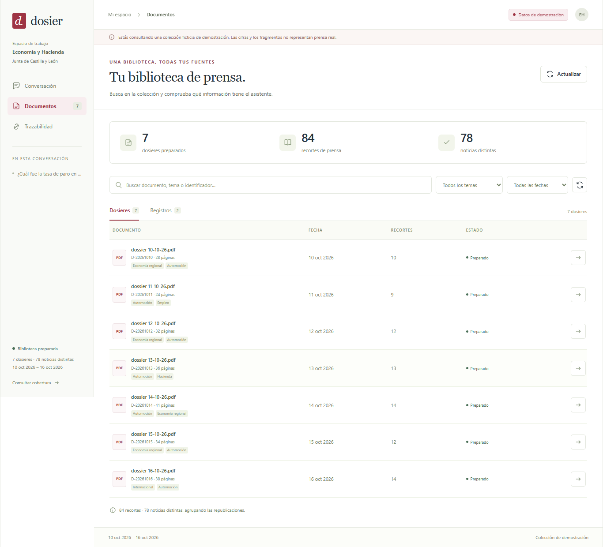

Proyecto final · Economía y Hacienda
Dosier.
La actualidad, con sus fuentes.
Qué problema resuelve
Dosier permite consultar en lenguaje natural los dosieres de prensa de la Consejería de Economía y Hacienda de la Junta de Castilla y León, sin revisar cada documento por separado. Reúne las respuestas y los fragmentos que las justifican, y avisa cuando la biblioteca no contiene el dato solicitado.
De dónde salen los datos
Esta entrega utiliza un corpus ficticio y reproducible basado en maquetas.html, generado por src/proyecto_final/datos_demo.py y guardado en data/corpus.json: 7 dosieres simulados del 10 al 16 de octubre de 2026, 84 recortes, 78 noticias distintas y 2 registros de análisis.
Las cifras, los medios y los nombres de PDF son de demostración. No se han extraído los PDF de prensa originales. Las respuestas capturadas sí proceden de la aplicación y de su servidor en funcionamiento.
La aplicación en uso · 01
Menciones a la Junta

La aplicación en uso · 02
Noticias de automoción

La aplicación en uso · 03
Previsiones económicas

La aplicación en uso · 04
Reconocer los límites del corpus

La aplicación en uso · 05
Biblioteca de documentos

Cómo lo comprobé · Prueba 1
Menciones a la Junta
Pregunta enviada
¿En cuántas noticias se menciona a la Junta de Castilla y León?
Lo que respondió realmente
Contraste con las fuentes
Sí, coincide: la respuesta da 32 noticias distintas y REG-001 dice que 35 recortes corresponden a 32 noticias distintas con mención a la Junta. Las 78 noticias son el total del corpus, no el recuento de menciones.
Todos los fragmentos coinciden literalmente con las fuentes del corpus local. El servidor indica que utilizó generación con el modelo.
Qué fuentes abrir para confirmarlo
- REG-001 · REG-001:0
Recuento de todas las noticias, menciones a la Junta y automoción
Los enlaces abren los fragmentos cotejados en capturas/fuentes-verificadas.html. Ahí se indica cómo localizarlos en el corpus y cómo reproducir los registros. La comparación literal es automática; la lectura de si la respuesta interpreta bien cada fragmento debe confirmarse con estas fuentes.
Cómo lo comprobé · Prueba 2
Noticias de automoción
Pregunta enviada
¿Existen noticias relacionadas con la automoción?
Lo que respondió realmente
Contraste con las fuentes
Sí, coincide: REG-001 indica 12 noticias distintas y 14 recortes de automoción, con los temas enumerados en la respuesta. La noticia N-047 describe formación, modernización y adaptación de la cadena de componentes hacia la movilidad eléctrica.
Todos los fragmentos coinciden literalmente con las fuentes del corpus local. El servidor indica que utilizó generación con el modelo.
Qué fuentes abrir para confirmarlo
- REG-001 · REG-001:0
Recuento de todas las noticias, menciones a la Junta y automoción - D-20261014, p. 8 · D-20261014:N-047:0
La automoción regional refuerza su apuesta por la formación y la modernización
Los enlaces abren los fragmentos cotejados en capturas/fuentes-verificadas.html. Ahí se indica cómo localizarlos en el corpus y cómo reproducir los registros. La comparación literal es automática; la lectura de si la respuesta interpreta bien cada fragmento debe confirmarse con estas fuentes.
Cómo lo comprobé · Prueba 3
Previsiones económicas
Pregunta enviada
¿Qué previsión hay sobre la economía regional, nacional e internacional?
Lo que respondió realmente
Contraste con las fuentes
Sí, coincide: los tres fragmentos citados indican para 2026 un crecimiento del 2,1 % regional, 2,4 % nacional y 2,9 % mundial, con los mismos apoyos y riesgos que resume la respuesta. Son previsiones ficticias, no resultados observados.
Todos los fragmentos coinciden literalmente con las fuentes del corpus local. El servidor indica que utilizó generación con el modelo.
Qué fuentes abrir para confirmarlo
- D-20261014, p. 3 · D-20261014:N-042:0
Perspectivas de la economía de Castilla y León para 2026 - D-20261015, p. 5 · D-20261015:N-056:0
El consumo sostiene el escenario de crecimiento nacional - D-20261016, p. 9 · D-20261016:N-069:0
La incertidumbre comercial condiciona las perspectivas internacionales
Los enlaces abren los fragmentos cotejados en capturas/fuentes-verificadas.html. Ahí se indica cómo localizarlos en el corpus y cómo reproducir los registros. La comparación literal es automática; la lectura de si la respuesta interpreta bien cada fragmento debe confirmarse con estas fuentes.
Cómo lo comprobé · Prueba 4
Reconocer los límites del corpus
Pregunta enviada
¿Cuál fue la tasa de paro en 1980?
Lo que respondió realmente
Contraste con las fuentes
Sí, como explicación de ausencia de datos: REG-002 excluye series históricas de empleo y dice que no consta una tasa para 1980. No respalda ninguna cifra de paro; la respuesta tampoco inventa una.
Todos los fragmentos coinciden literalmente con las fuentes del corpus local. El servidor indica que no utilizó generación con el modelo.
Qué fuentes abrir para confirmarlo
- REG-002 · REG-002:0
Alcance y límites de la biblioteca
Los enlaces abren los fragmentos cotejados en capturas/fuentes-verificadas.html. Ahí se indica cómo localizarlos en el corpus y cómo reproducir los registros. La comparación literal es automática; la lectura de si la respuesta interpreta bien cada fragmento debe confirmarse con estas fuentes.
Arquitectura y reproducción
Cómo está hecho
Servidor en Python con RAG
FastAPI, Uvicorn, OpenAI, python-dotenv y NumPy. El servidor prepara fragmentos del corpus, calcula embeddings y conserva el índice en data/indice.npz. Reutiliza el índice si el corpus y la configuración no han cambiado.
POST /api/preguntar devuelve estado, respuesta, fuentes y si se utilizó generación. GET /api/documentos sirve el listado y sus filtros. Las fuentes se construyen y validan en el servidor. La pregunta sobre 1980 se rechaza por falta de cobertura antes de llamar al modelo.
Interfaz en Svelte
Svelte con TypeScript y Vite: conversación, tarjetas de fuentes, aviso de ausencia de datos, biblioteca y detalle de fuente. El navegador consulta únicamente las rutas /api; Vite las dirige al servidor del puerto 8000. La clave permanece en el .env del servidor.
Modelos utilizados
Generación configurada: gpt-6-luna.
Embeddings configurados: text-embedding-3-small.
Cómo reproducir esta entrega
Desde la carpeta del proyecto, inicia uv run servidor.py. En otra terminal ejecuta cd web y npm.cmd run dev. Abre http://127.0.0.1:5173.
Con ambas partes arrancadas, ejecuta en web/: node capturas.mjs. El script utiliza playwright-core y Edge instalado con channel: 'msedge'; no descarga navegadores. Para regenerar solo el informe y el PDF desde las evidencias guardadas: node capturas.mjs --pdf.
Qué se verificó y qué queda para revisión
El script exige respuestas HTTP correctas, texto visible, fuentes mostradas y coincidencia literal de cada fuente con el corpus. Comprueba que 1980 devuelve no_consta sin generación, que el listado contiene siete dosieres y que no hay errores JavaScript. El significado de cada respuesta debe contrastarse leyendo los fragmentos enlazados en «Cómo lo comprobé».
Conserva entregable.html junto con la carpeta capturas para mantener sus imágenes y enlaces relativos. Las preguntas pueden producir redacciones distintas al repetir la generación. Las evidencias de esta ejecución están en capturas/comprobaciones.json.